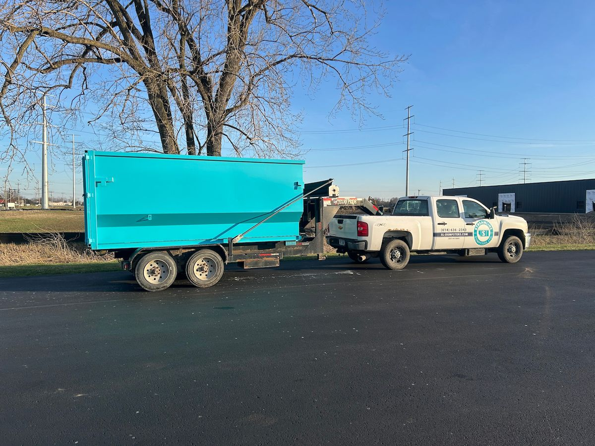

Recycling and Your Dumpster Rental: What You Need to Know
Renting a dumpster doesn't mean everything goes to the landfill. Metals get recycled separately, concrete finds new life in road base and fill projects, and plenty of what people toss could go to someone who actually needs it. Here's the practical guide to making your Columbus construction waste project as responsible as possible.

A homeowner in Dublin called me after a full kitchen gut. She'd hired a contractor who cleared the kitchen to the studs — old cabinets, countertops, appliances, drywall, tile. All of it went in the dumpster. When I picked it up, she asked: "Where does this stuff actually go? Does any of it get recycled?"
It's a fair question, and one I don't hear enough.
The honest answer is: some does, some doesn't, and there's quite a bit you can do before the debris ever hits the dumpster to make sure more of it gets diverted from the landfill. This post covers what I know from handling Columbus construction waste regularly — what gets recycled, what to pull out beforehand, and where to take the things that need a different destination.
Metals: Pull Them Out Before They Go In
This is the biggest one, and the one I feel strongly about. Metal is one of the most recyclable materials on earth — steel, copper, aluminum, and iron all have active recycling markets and get processed efficiently. Tossing scrap metal in a mixed dumpster isn't wrong, but it's not the best outcome for the material either.
My approach: I take metals separately to be recycled rather than mixing them into general demolition loads. If your project generates significant scrap metal — old steel beams, copper pipe and wire, aluminum window frames, iron radiators — pull it aside. Most scrap yards in the Columbus area will take it, and some will even pay you for it depending on current commodity prices.
Common metals worth separating on renovation and construction projects:
- Copper pipe and wire — consistently high value at scrap yards
- Aluminum window frames, gutters, and flashing
- Steel studs and framing
- Cast iron radiators and plumbing
- Appliance bodies (after freon recovery on refrigerants — see below)
- HVAC equipment (ductwork, air handlers)
For contractors running regular jobs, establishing a relationship with a local scrap yard and separating metals as a standard practice takes maybe ten minutes of crew time per job and keeps valuable material out of the landfill entirely.
Concrete and Masonry: More Useful Than You Think
Broken concrete from slab removal, foundation work, and demo doesn't just disappear into a landfill. Crushed concrete gets recycled into road base, fill material, and aggregate used in new construction. In the Columbus area, several processing facilities accept clean concrete and masonry for this purpose.
If your project involves significant concrete removal — a full slab, a block wall, a patio demolition — it's worth considering whether to separate it from the general debris load. Clean concrete (no rebar attached, no mixed debris) is easier for processors to handle and more likely to be diverted for recycling rather than landfilled.
That said, for most residential projects, the volume of concrete doesn't justify a separate haul. A 20-yard dumpster with mixed demo debris including some broken concrete is a perfectly normal and manageable load. I just want you to know the option exists if you're dealing with large volumes.
Before the Dumpster: What's Worth Donating
The best recycling is no disposal at all. A surprising amount of what ends up in renovation dumpsters could be useful to someone else — and Columbus has good options for getting it there.
Habitat for Humanity ReStore
The Habitat for Humanity ReStore locations in Central Ohio accept used building materials in good condition. If you're replacing functional cabinets, doors, windows, hardware, fixtures, or flooring, ReStore will take them. The material gets resold to fund affordable housing projects, and you keep usable stuff out of the landfill.
What they typically accept:
- Kitchen and bathroom cabinets in good condition
- Interior and exterior doors
- Windows in working order
- Plumbing and electrical fixtures
- Flooring — hardwood, tile, laminate
- Lumber and building materials in reusable condition
- Appliances that work
Call ahead or check their website for current accepted items — what they take varies by location and season. The pickup option is available for larger donations.
Facebook Marketplace and Nextdoor
For contractors and homeowners with time to spare before demo day, listing usable materials on Facebook Marketplace or Nextdoor as "free" moves things fast. Old hardwood flooring, vintage doors, salvage-worthy fixtures — people will come pick it up. You'd be surprised what finds a taker when the price is zero.
Items That Must Be Recycled Separately
Some materials can't go in a standard dumpster regardless of the project. These need to be taken to specific facilities. This isn't optional — it's a combination of environmental regulation and safe disposal practice.
Items That Cannot Go in the Dumpster — Columbus Resources
Electronics (TVs, computers, monitors, printers)
E-waste contains lead, mercury, and other hazardous materials. SWACO (Solid Waste Authority of Central Ohio) operates e-waste drop-off events and accepts electronics at their facilities. Check swaco.org for current schedules.
Batteries (household, automotive, lithium)
Most hardware stores (Home Depot, Lowe's, Best Buy) accept household batteries for recycling at no charge. Automotive batteries go back to auto parts stores — AutoZone and O'Reilly both take them.
Appliances with refrigerants (refrigerators, AC units, dehumidifiers)
Refrigerant must be recovered by a certified technician before the appliance can be scrapped or recycled. Contact a licensed HVAC contractor or an appliance recycling service. Many utility companies — including AEP Ohio — offer appliance recycling programs with free pickup.
Propane tanks and fuel containers
Never put propane cylinders or gas cans in a dumpster. Most hardware stores exchange or recycle small propane tanks. Larger tanks need to be handled by a propane supplier.
Paint, solvents, and chemicals
SWACO operates Household Hazardous Waste (HHW) drop-off events throughout Franklin County several times per year. Paint, stains, varnish, pesticides, and cleaning chemicals all qualify. Free for Franklin County residents. Check swaco.org for the next event date.
Fluorescent bulbs and ballasts
Contain mercury — don't landfill. Home Depot and Lowe's accept CFLs and fluorescent tubes. For commercial quantities, contact a lamp recycler directly.
Tires
Not accepted in dumpsters. Most tire shops take old tires for a small fee. SWACO also accepts tires at specific events.
SWACO: Columbus's Central Waste Resource
If you're in Franklin County, SWACO (Solid Waste Authority of Central Ohio) is the best single resource for recycling and proper disposal questions. They operate:
- Household Hazardous Waste drop-off events (paint, chemicals, electronics)
- Compost and yard waste programs
- Drop-off facilities for materials not accepted curbside
- A waste diversion hotline and online lookup tool
Their website (swaco.org) has a material search tool where you can type in almost any item and find out the correct disposal method in Franklin County. If you're working in Delaware County (Powell, parts of Dublin), check with the Delaware County Solid Waste District for their equivalent programs.
For Contractors: Job Site Sorting That Actually Works
On larger renovation jobs, a small amount of on-site sorting goes a long way. The practical version doesn't require separate bins for every material category — it just means keeping two things separate:
- Metals — a designated pile or bin for all scrap metal, taken to the scrap yard at the end of the job
- Everything else — goes in the dumpster
That simple separation is the highest-ROI move on most job sites. It keeps recyclable metal out of the landfill, potentially puts money back in your pocket at the scrap yard, and takes almost no additional effort once it becomes standard practice for the crew.
For jobs with significant concrete removal, a second separation — clean concrete away from mixed debris — is worth it if the volume justifies a dedicated haul or if you have an easy drop-off option nearby.
Beyond that, the more elaborate sorting systems you sometimes see (separate bins for wood, drywall, cardboard) are genuinely useful on very large commercial projects but rarely practical on typical residential renovation jobs. Don't let perfect be the enemy of good.
What You're Actually Doing When You Rent a Dumpster
I want to be straightforward about something: a standard mixed-load dumpster is designed for general construction and renovation debris, and most of what goes in it gets processed through a transfer station that sorts what it can and landfills the rest. The Columbus area's waste infrastructure is reasonably good — SWACO has invested in waste diversion programs — but a mixed dumpster load isn't the same as a carefully sorted recycling drop-off.
That's not a reason not to use a dumpster. It's a reason to think about what goes in one.
Pull metals before the demo starts. Donate what's still functional. Take hazardous materials to the right facilities. Put everything else in the dumpster. That approach — practical, not perfect — is a meaningful improvement over throwing everything in without a second thought, and it's genuinely achievable on almost any project.
Ready to Book Your Dumpster?
Questions about what you can and can't put in a dumpster for your specific project? Call me before you book. I'd rather spend five minutes on the phone answering your questions than have you dealing with a disposal issue after the fact.
14-yard dumpster: $319 + tax = $344.52 total. Includes delivery, 3 days, 4,000 lbs, pickup, and driveway protection boards. Extensions at $15/day. Same-day delivery available when you call before 2 PM.
- Call to book or ask questions: (614) 636-2343
- Book online anytime: Quick online booking available 24/7
- Same-day delivery: Call before 2 PM
Serving Dublin, Hilliard, Powell, Upper Arlington, Worthington, Plain City, and the greater Columbus area.